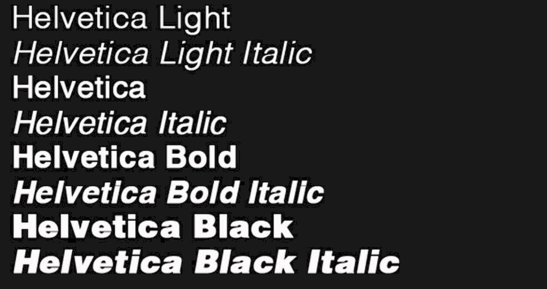

HELVETICA
L'origine
Helvetica è un carattere tipografico sans-serif, disegnato nel 1957 da Max Miedinger e ideato da Eduard Hoffman.
Helvetica è erede di Akzidenz Grotesk, altro carattere tipografico sans-serif nato nel 1896 presso la fonderia H.Berthold.
L’idea era quella di creare un carattere moderno ma allo stesso tempo elegante, riprendendo quindi lo stile dell’Akzidenz Grotesk.
Per tal motivo, il nome iniziale di Helvetica fu Neue Haas Grotesk, soltanto nel 1961, contestualmente all’introduzione sul mercato, cambiò nome in Helvetica.
Helvetica ispira fiducia, serenità e nasce con l’intenzione di riferire informazioni importanti con la maggiore chiarezza possibile.


Max Miedinger, 1910-1980